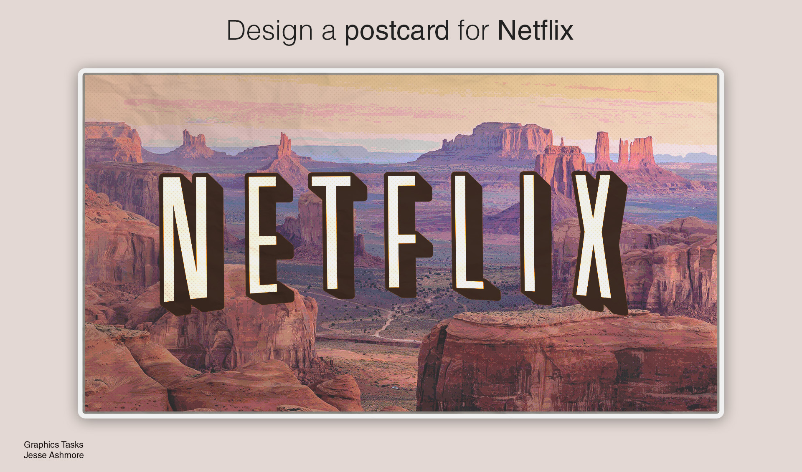

Showcase
About Me



Hi, my name is Jesse.
I'm a BSc student in Maynooth currently pursuing a computer science degree specialising in Web/Mobile Dev and Multimedia. I have a range of skill-sets: from programming to web development, graphics design to photography, and video editing to music-making.
I am passionate for languages, learning, creative and tech.
I'm a BSc student in Maynooth currently pursuing a computer science degree specialising in Web/Mobile Dev and Multimedia. I have a range of skill-sets: from programming to web development, graphics design to photography, and video editing to music-making.
I am passionate for languages, learning, creative and tech.